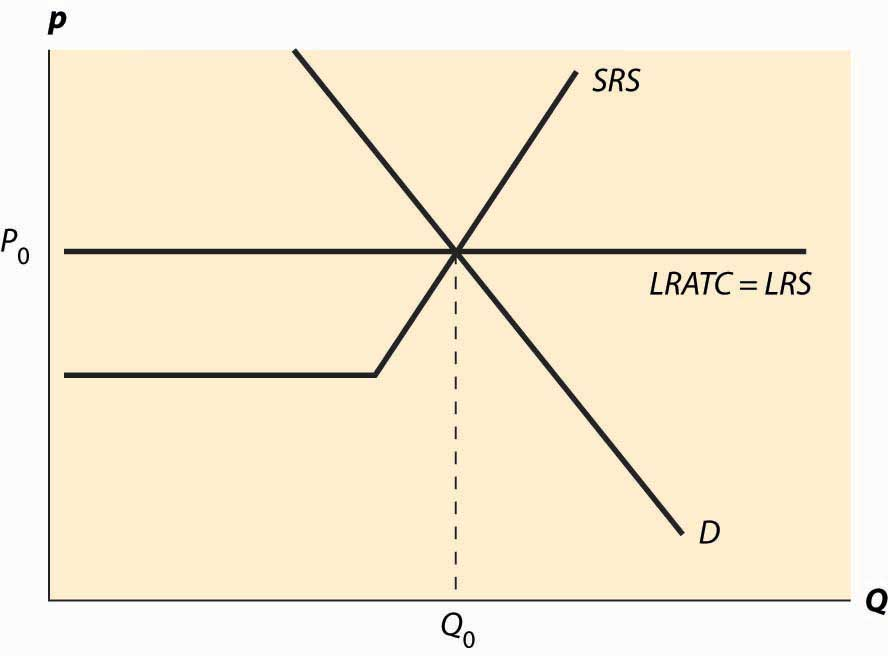
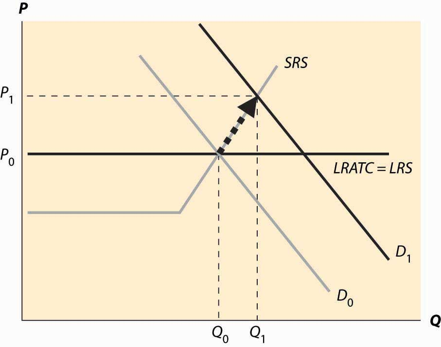
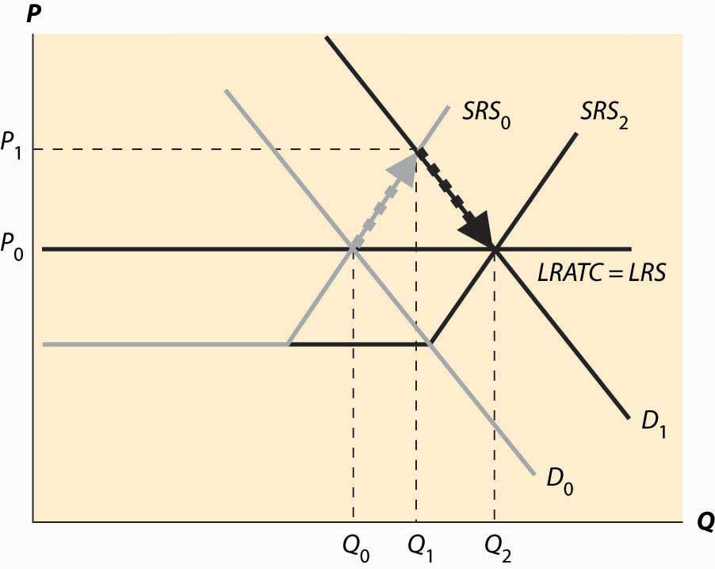
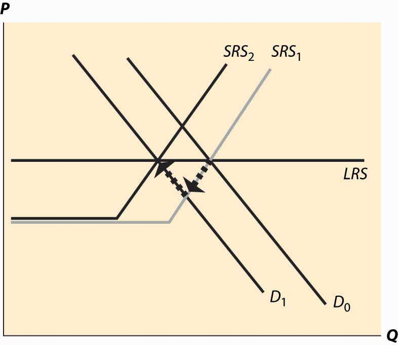
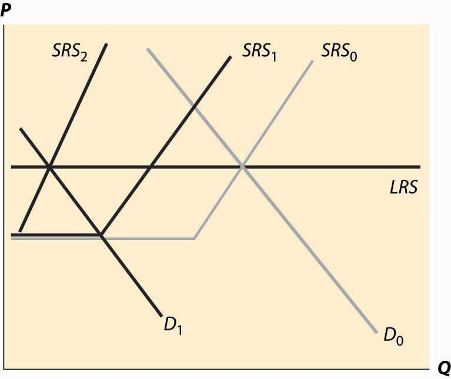
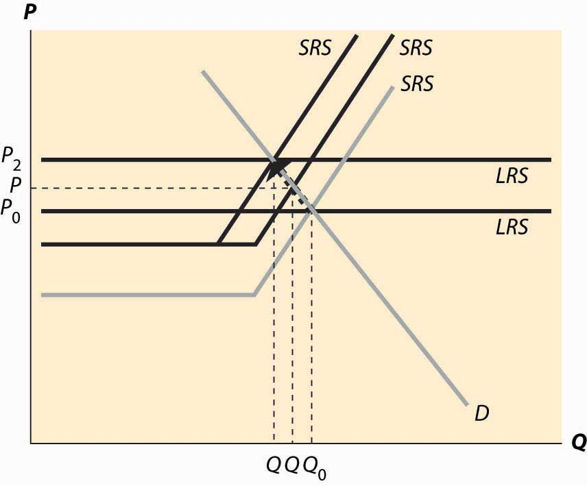

Having understood how a competitive firm responds to price and input cost changes, we consider how a competitive market responds to demand or cost changes.
Figure 10.4 Long-run equilibrium
The basic picture of a long-run equilibrium is presented in Figure 10.4 "Long-run equilibrium". There are three curves, all of which are already familiar. First, there is demand, considered in the first chapter. Here, demand is taken to be the “per-period” demand. Second, there is the short-run supply, which reflects two components—a shutdown point at minimum average variable cost, and quantity such that price equals short-run marginal cost above that level. The short-run supply, however, is the market supply level, which means that it sums up the individual firm effects. Finally, there is the long-run average total cost at the industry level, thus reflecting any external diseconomy or economy of scale. As drawn in Figure 10.4 "Long-run equilibrium", there is no long-run scale effect. The long-run average total cost is also the long-run industry supply.This may seem confusing, because supply is generally the marginal cost, not the average cost. However, because a firm will quit producing in the long-term if price falls below its minimum average cost, the long-term supply is just the minimum average cost of the individual firms because this is the marginal cost of the industry.
As drawn, the industry is in equilibrium, with price equal to P0, which is the long-run average total cost, and also equates short-run supply and demand. That is, at the price of P0, and industry output of Q0, no firm wishes to shut down, no firm can make positive profits from entering, there is no excess output, and no consumer is rationed. Thus, no market participant has an incentive to change his or her behavior, so the market is in both long-run and short-run equilibrium. In long-run equilibriumThe point where both long-run demand equals long-run supply and short-run demand equals short-run supply., long-run demand equals long-run supply, and short-run demand equals short-run supply, so the market is also in short-run equilibriumThe point where short-run demand equals short-run supply., where short-run demand equals short-run supply.
Now consider an increase in demand. Demand might increase because of population growth, or because a new use for an existing product is developed, or because of income growth, or because the product becomes more useful. For example, the widespread adoption of the Atkins diet increased demand for high-protein products like beef jerky and eggs. Suppose that the change is expected to be permanent. This is important because the decision of a firm to enter is based more on expectations of future demand than on present demand.
Figure 10.5 "A shift in demand" reproduces the equilibrium figure, but with the curves “grayed out” to indicate a starting position and a darker, new demand curve, labeled D1.
Figure 10.5 A shift in demand
The initial effect of the increased demand is that the price is bid up, because there is excess demand at the old price, P0. This is reflected by a change in both price and quantity to P1 and Q1, to the intersection of the short-run supply (SRS) and the new demand curve. This is a short-run equilibrium, and persists temporarily because, in the short run, the cost of additional supply is higher.
At the new, short-run equilibrium, price exceeds the long-run supply (LRS) cost. This higher price attracts new investment in the industry. It takes some time for this new investment to increase the quantity supplied, but over time the new investment leads to increased output, and a fall in the price, as illustrated in Figure 10.6 "Return to long-run equilibrium".
As new investment is attracted into the industry, the short-run supply shifts to the right because, with the new investment, more is produced at any given price level. This is illustrated with the darker short-run supply, SRS2. The increase in price causes the price to fall back to its initial level and the quantity to increase still further to Q2.
Figure 10.6 Return to long-run equilibrium
It is tempting to think that the effect of a decrease in demand just retraces the steps of an increase in demand, but that isn’t correct. In both cases, the first effect is the intersection of the new demand with the old short-run supply. Only then does the short-run supply adjust to equilibrate the demand with the long-run supply; that is, the initial effect is a short-run equilibrium, followed by adjustment of the short-run supply to bring the system into long-run equilibrium. Moreover, a small decrease in demand can have a qualitatively different effect in the short run than a large decrease in demand, depending on whether the decrease is large enough to induce immediate exit of firms. This is illustrated in Figure 10.7 "A decrease in demand".
In Figure 10.7 "A decrease in demand", we start at the long-run equilibrium where LRS and D0 and SRS0 all intersect. If demand falls to D1, the price falls to the intersection of the new demand and the old short-run supply, along SRS0. At that point, exit of firms reduces the short-run supply and the price rises, following along the new demand D1.
Figure 10.7 A decrease in demand
If, however, the decrease in demand is large enough to push the industry to minimum average variable cost, there is immediate exit. In Figure 10.8 "A big decrease in demand", the fall in demand from D0 to D1 is sufficient to push the price to minimum average variable cost, which is the shutdown point of suppliers. Enough suppliers have to shut down to keep the price at this level, which induces a shift of the short-run supply, to SRS1. Then there is additional shutdown, shifting in the short-run supply still further, but driving up the price (along the demand curve) until the long-term equilibrium is reached.
Figure 10.8 A big decrease in demand
Consider an increase in the price of an input into production. For example, an increase in the price of crude oil increases the cost of manufacturing gasoline. This tends to decrease (shift up) both the long-run supply and the short-run supply by the amount of the cost increase. The effect is illustrated in Figure 10.9 "A decrease in supply". The increased costs reduce both the short-run supply (prices have to be higher in order to produce the same quantity) and the long-run supply. The short-run supply shifts upward to SRS1 and the long-run supply to LRS2. The short-run effect is to move to the intersection of the short-run supply and demand, which is at the price P1 and the quantity Q1. This price is below the long-run average cost, which is the long-run supply, so over time some firms don’t replace their capital and there is disinvestment in the industry. This disinvestment causes the short-run supply to be reduced (move left) to SRS2.
Figure 10.9 A decrease in supply
The case of a change in supply is more challenging because both the long-run supply and the short-run supply are shifted. But the logic—start at a long-run equilibrium, then look for the intersection of current demand and short-run supply, then look for the intersection of current demand and long-run supply—is the same whether demand or supply have shifted.